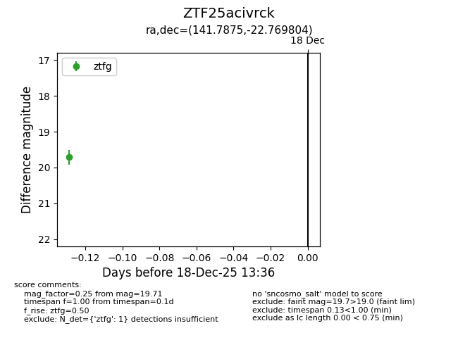
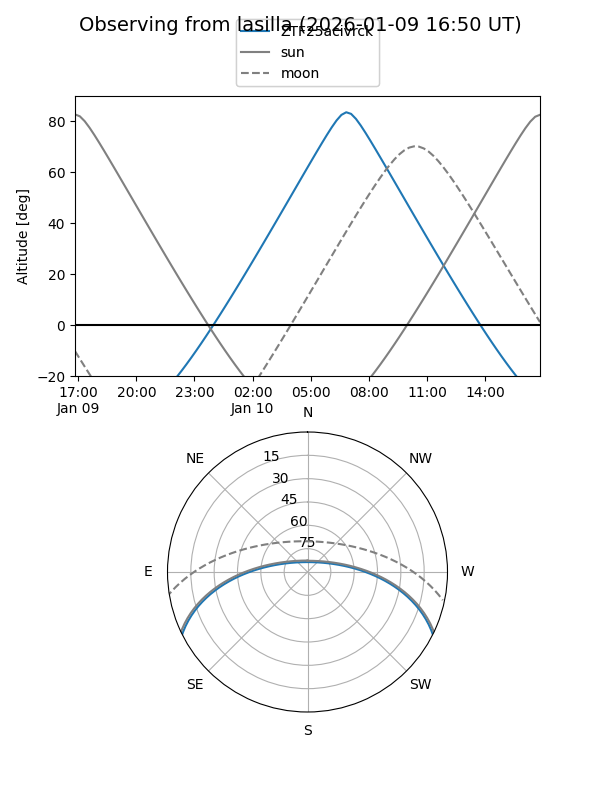
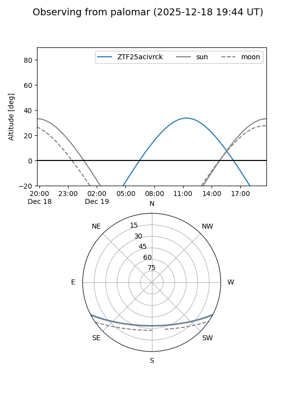

ZTF25acivrck
Target ZTF25acivrck at 2026-01-09 12:49
Aliases and brokers:
FINK: link
Lasair: link
ALeRCE: link
alt names
ZTF25acivrck (ztf,fink_ztf)
Coordinates:
equatorial (ra, dec) = 141.7875,-22.76980
equatorial (HMS+DMS) = 09:27:08.99,-22:46:11.29
galactic (l, b) = (253.2465,+19.82553)
Flags:
Photometry:
last ztfg=19.73
2 ztfg detections
Lightcurve

Visibility


Additional plots